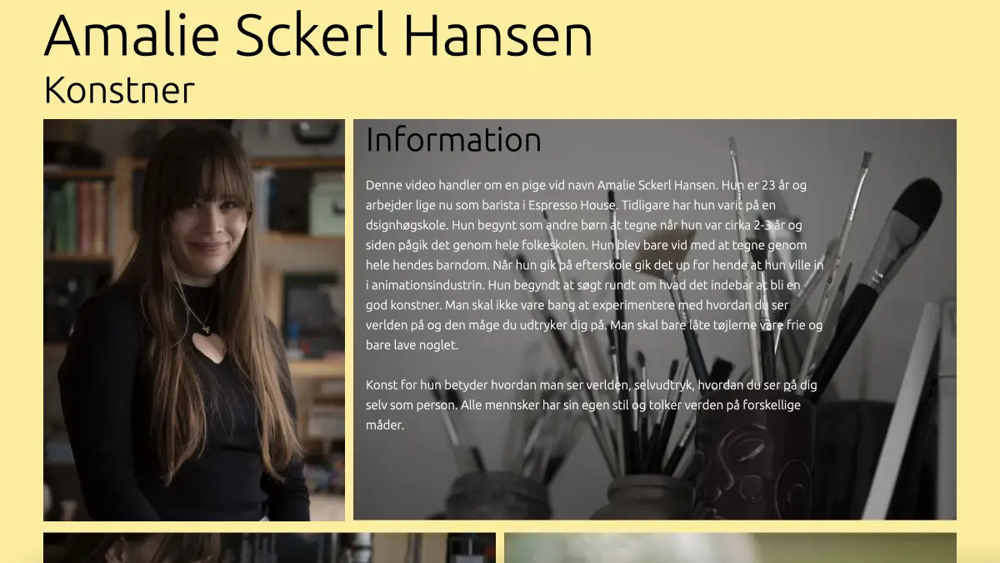

pilotsite

intervju
Vi förbreder oss inför våran intervju genom att skriva ned några relevanta frågor. Vi förbreder också i vilka vinklar vi ville filma. Vi använde oss utav 5-skuds regeln som innehåller följande punkter:
- - Closeup händer
- - Closeup ansikte
- - Wide shot
- - Over the shoulder
- - Alternativ vinkel

design
wireframe och layout
För att få en överblick över hur jag skulle koda sidan så började jag med att göra en wireframe och sedan ett payoutdirag för att kunna se hur classerna hänger ihop med varandra. Detta är mer tidssparande då man slipper sitta och komma på classer och columner när man kodar
prototype
Jag ville hålla min prototype enkel med mycket bilder som kan beskriva henne bättre än text. Backgrundsfärgen blec ljusgul för att få in något lugn och harmoni i sidan.
Klik for siten